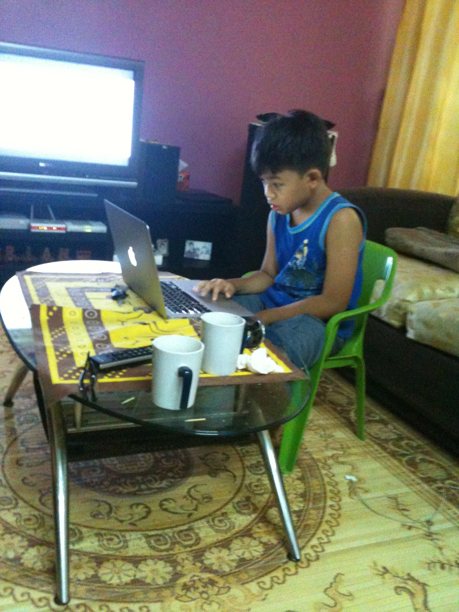
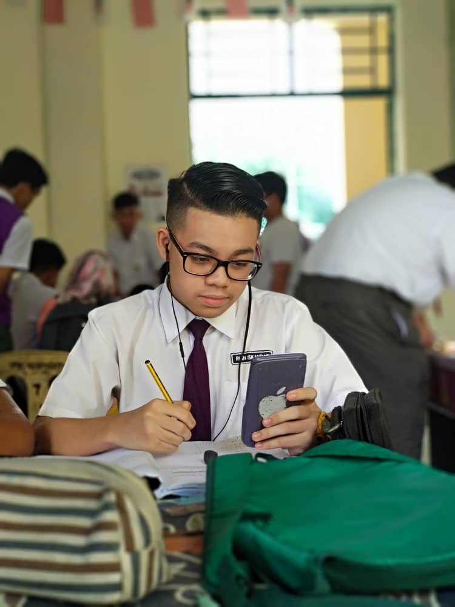
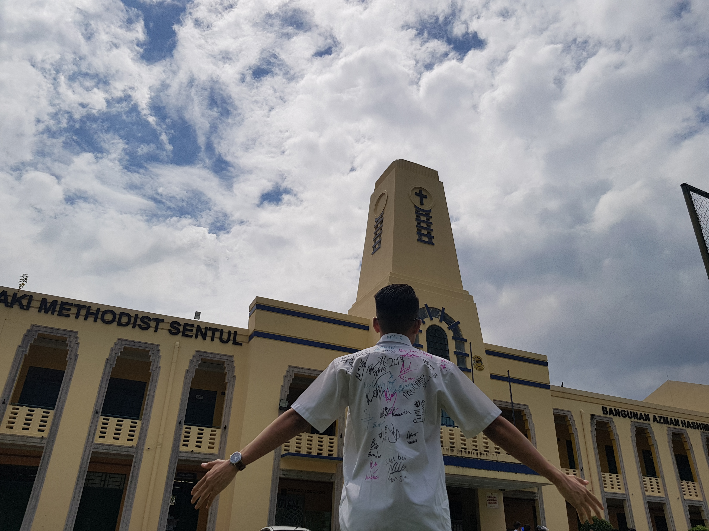
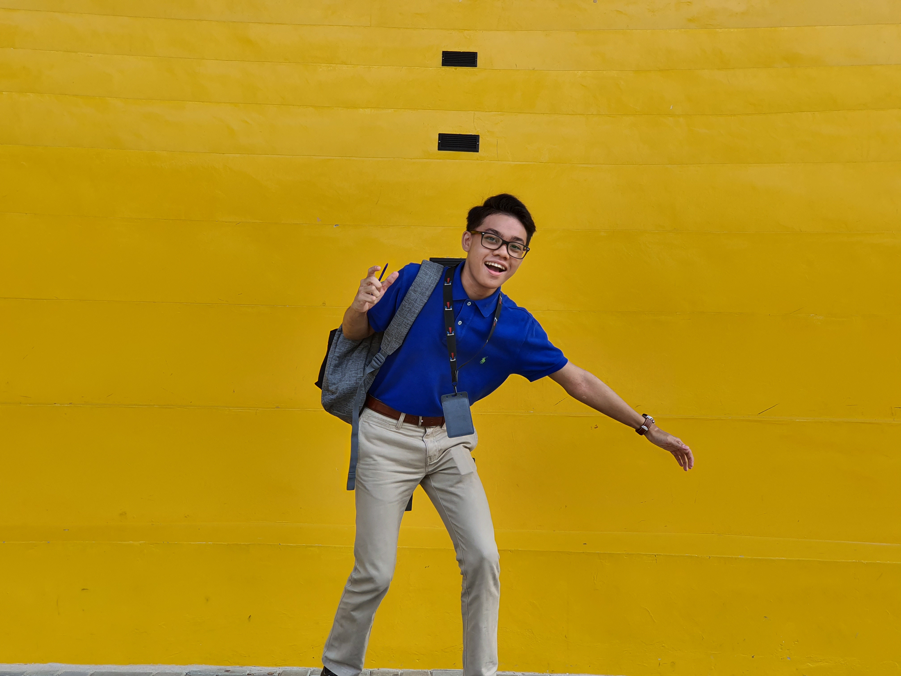

|
 11-year-old me staring at a computer for hours. |
My name is Rian Iskandar. I was born on 10 March 2001. I started having interest about computers at this age, a game called Minecraft is the reason behind it. From messing around with the game files to learn modifying contents of the game, I becoming more curious in how video games are being developed. Since then, I have a dream to become a programmer. |
|
A portrait of 14-year-old me just started wearing glasses. |
I didn't quite enjoy during the early days of my teenage life in high-school. Someone will try to annoy me somehow. I cried at the end everytime after a fight. But what keeps me motivated and stay strong, will always be a computer and video games at home! |
|
A selfie of me listening to some songs with my earphones on. |
I am 16 years old at this point. I started to have interest in the world of smartphones and technologies. At this stage, I invest a lot on tech such as earphone and video games. I feel so much better at school as I started to adapt to the environment, but my grades at this point are falling apart especially in Accounts subject. I hate that subject most of the time. But still, I need to do something to achieve my dreams. |
|
 A portrait of me attending an extra class at school for additional mathematics subject. |
Here i am grinding day-by-day chasing knowledge on my final year on the high-school. I missed a lot since I was playing too much during secondary 4. It's time for me to get back on track. Sijil Pelajaran Malaysia (SPM) is getting nearer, and I gotta do what I gotta do in order to achieve my dreams. To be honest, my secondary 5 was the best year ever! |
|
 Yeay just finished Sijil Pelajaran Malaysia (SPM). |
I felt quite relieved that i just finished SPM. But i still feel quite sad though knowing that this is the last time I am going to be here, especially my friends. Each of us will be going to live our own lives after this and somehow we will not be able to meet again. |
|
 Here is where I am today! |
So yeah. Here is where I'm currently at. Persuing my dreams in Universiti Teknologi Mara (UiTM). At this day, I still will never forget, it is the game called Minecraft that have created my dreams to this point. |